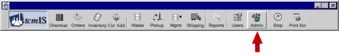
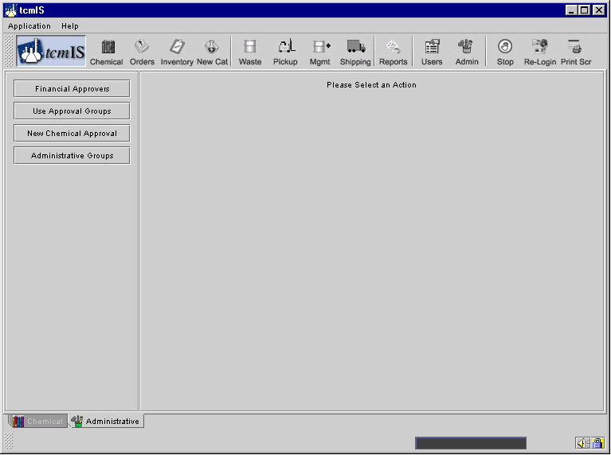
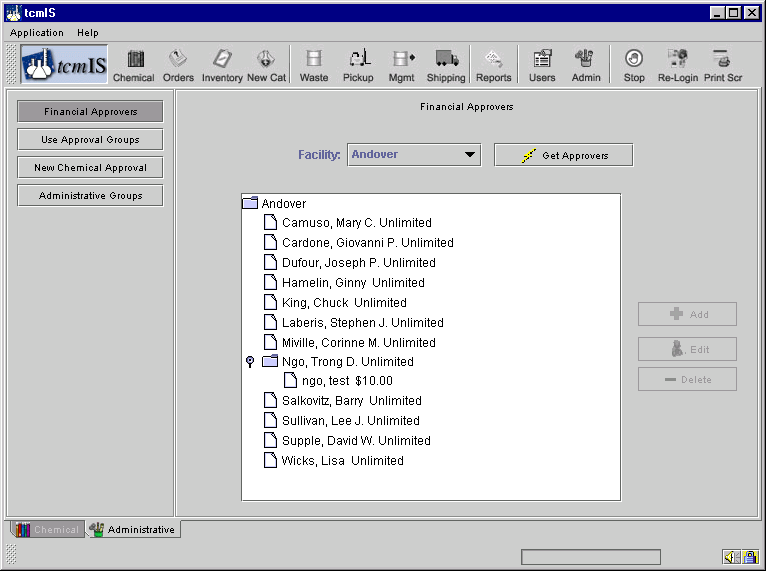
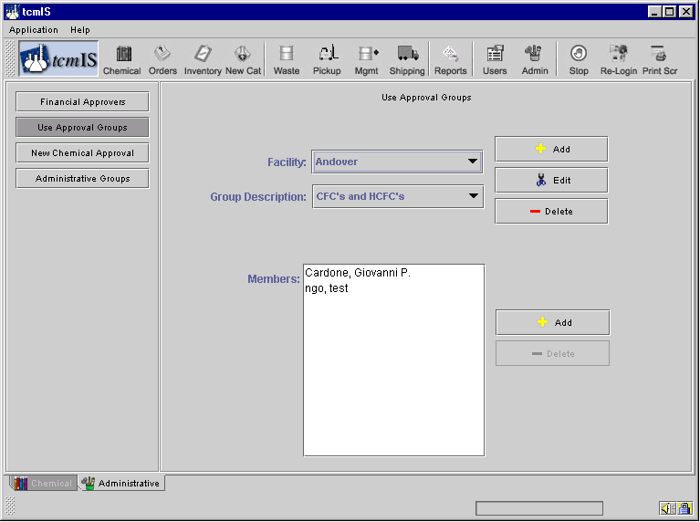
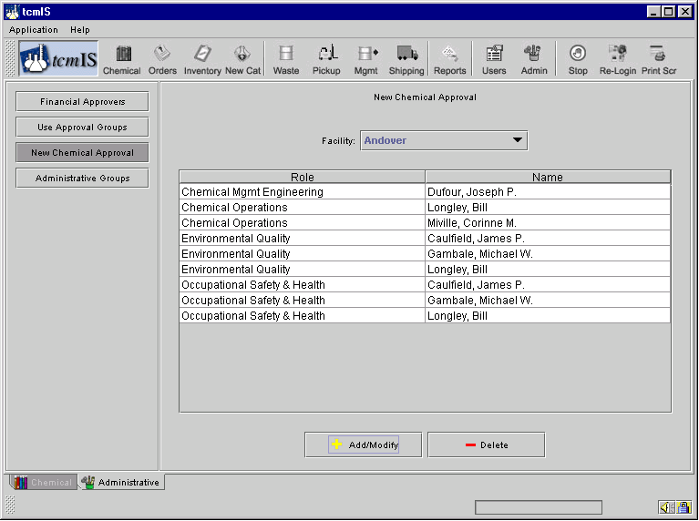
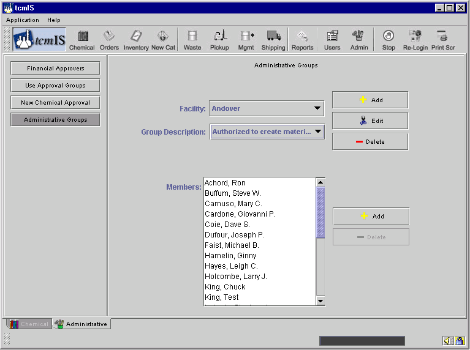

Administrative
This Screen can be reached by clicking on the button named Admin as shown below.
Administrative functions include:
- Approvers changes,
- Use Approval Groups revisions,
- New Chemical Approvals, and
- Administrative Groups.

The Financial Approvers administrative process allows you to add edit or delete approvers for specific facilities.
You may add, edit or delete Use Approval Groups and their members.

You can also add new members to Use Approval Groups by entering names in the Members box. You can also search for names and select names to add from your search.
The New Chemical Approval administrative process allows you to modify the roles or names of approvers for new chemicals. For example, your facility may require that Operations, Quality, and Health ∓ Safety approve any new chemicals added to the catalog. Each of these roles may have one or more staff with authority to approve the new chemical request.

The Administrative Groups function lets you add, edit or delete administrative personnel associated with particular facilities and specific administrative 